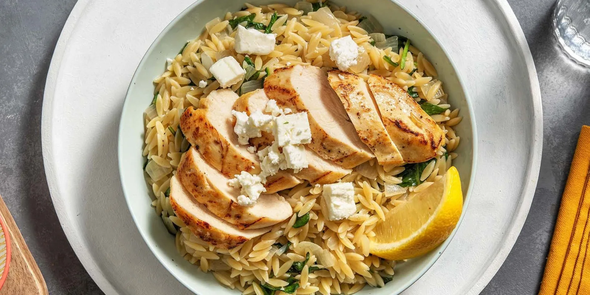

One-Pan Braised Greek Chicken with Saucy Lemon Orzotto

Description
This one is for the lemon-lovers out there! Mediterranean-spiced chicken is gently braised to perfection, while you make an 'orzotto' in the same pan! The result is a meal with minimal cleanup that's maxed out on flavour.
Nutrition Info
Prep & Cook: 30 mins
Servings: 2
Ingredients
- Chicken Breasts, 285 g
- Orzo, 170 g
- Chicken Broth Concentrate, 15 ml
- Yellow Onion, 113 g
- Mediterranean Spice Blend, 1 tbsp
- 1 Lemon
- Feta Cheese, crumbled, 1/4 cup
- Baby Spinach, 56 g
- Garlic, Cloves, 2
- Cooking Oil, 3 tsp
- Butter, 2 tbsp
- Salt & pepper, to taste
Steps
- Gather all your cooking tools and then start the recipe. Read the entire recipe card. Wash and dry all produce. Cut onion into ½-inch pieces. Zest and juice half the lemon. Cut remaining lemon into wedges. Roughly chop baby spinach. Grate or mince garlic.
- Pat chicken dry with paper towel. Season with salt, pepper, and Mediterranean Spice Blend. In a large non-stick pan, heat 2 tsp oil (double for 4 portions) over medium-high heat, until hot. Add chicken. Sear, until golden, 1-2 min per side. Set chicken aside on a plate (NOTE: Chicken will finish cooking in step 4!)
- In the same pan, reduce heat to medium, then add 1 tsp oil (double for 4 portions). Add onions and cook, stirring frequently, until softened, 2-3 minutes. Add orzo and garlic. Cook for 30 sec, until garlic is fragrant. Add 2 cups of warm water, 1/4 tsp salt (double both for 4 portions) and chicken broth. Bring to a boil over high heat.
- Once boiling, reduce heat to medium. Nestle chicken into pan. Cook, stirring occasionally for 8-10 min, flipping chicken halfway through, until chicken is cooked through.**Transfer chicken to a clean cutting board.
- Continue cooking until orzo is tender and the broth is almost entirely absorbed. (NOTE: For 4 portions, if orzo is still too brothy, increase heat and continue cooking, stirring often, until liquid is almost absorbed.)Stir spinach into pan until wilted, 1 minute. Remove pan from heat and stir in lemon zest, 1 tbsp lemon juice*, and 2 tbsp butter (double both for 4 portions).Season with salt and pepper. Thinly slice the chicken.
- Plate orzotto with chicken over top. Sprinkle with feta. Squeeze over a lemon wedge, to taste. Enjoy!
Nutrition Facts
Per Serving: 760 calories; protein 48g; carbohydrates 84g; fat 28g; saturated fat 10g; cholesterol 135mg; sodium 1,130mg, fiber 8g; sugar 7g. Full Receipe Facts